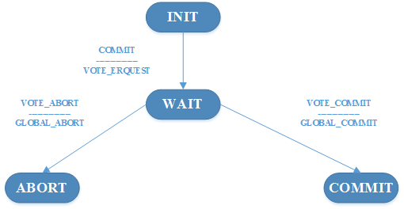
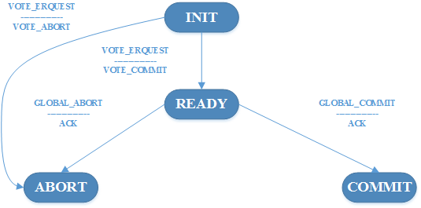

传统的关系型数据库以及很多的NewSql在事物处理方面都采用了两阶段提交协议。例如巨杉数据库[1,2]，以及小米在HBase上面利用coprocessor机制实现的强一致性的索引[3]。也就是说从关系型数据库到NoSql数据以及NewSql数据库，两阶段提交协议都在广泛的应用，那么两阶段体检协议到底是什么呢，到底神奇在什么地方呢？下面我们就在讲解一下两阶段提交协议以及它的变种，三阶段提交协议。
两阶段提交协议
两阶段提交协议，从名字中也看得出来，分为两个阶段，第一阶段主要是投票阶段，第二阶段才是提交阶段。主要角色也分为两个，一个是参与者，一个是协调者。
协议步骤
第一阶段：投票阶段
- 协调者向所有的参与者发送一个VOTE_REQUEST的消息
- 当参与者接收到VOTE_REQUEST的消息后，就像协调者发送一个VOTE_COMMIT的消息通知协调者已经准备好提交本地事物，否则就返回一个VOTE_ABORT的消息。
第二阶段：提交阶段
- 协调者收到所有的参与者的返回的消息，如果所有的参与者都表决要提交事物的时候，那么协调者就会向每一个参与者发送一个GLOBAL_COMMIT的消息；但是只要有一个参与者表决要取消事物，那么协调者就会决定取消事物，并且多播一个GLOBAL_ABORT的消息给所有的参与者。
- 每个参与者等待协调者的返回消息，然后根据此消息做出最后的反应。如果参与者收到的是GLOBAL_COMMIT的消息，那么参与者就会提交本地事物；相反的，如果参与者收到时GLOBAL_ABORT的消息，那么参与者就会取消本地事物。
以上就是两阶段提交的具体步骤，可以看出来，两阶段提交其实并不复杂，也很简单。但是在分布式系统中，主要的问题就是容错，假设协调者或是其中任何一个参与者出错了会怎么办呢？下面就着重分析下，在两阶段提交的具体步骤中，每一个步骤会出现的错误以及解决办法。
首先给出2PC中的协调者与参与者的状态转换图,如下图所示（备注：横线上面的消息是来自对方的消息，横线下面的消息是对此收到的消息所做出的应答消息）

图1 协调者状态转换图

图2 参与者状态转换图
容错阻塞
那么下面分析2PC中的容错问题，因为此才产生了3PC，我们先从协调者这个角色开始分析，然后再分析参与者的阻塞问题
协调者阻塞情况
- 协调者在WAIT的时候阻塞，等待来自每个参与者的表决。这种情况的发生可能是参与者挂了，或是网络延迟造成的。解决办法就是：如果在某段时间内协调者没有收到所有的表决，那么协作者就决定中止表决，然后向所有的参与者发送GLOBAL_ABORT的消息。
参与者阻塞情况
参与者可能在INIT的状态时候阻塞，等待协调者的VOTE_REQUEST的消息。这也可能是由于协调者挂了，或是网络延迟造成的。解决办法：如果在某一段时间之内参与者没有收到协调者的这个消息，那么参与者就简单的在本地中止事物，并且向协调者发送一个VOTE_ABORT的消息。
参与者可能在READY的状态阻塞，等待协作者发送全局表决消息。这也可能是由于协调者挂了，或是网络延迟造成的。这个时候解决办法比较多，同时，也是因为这个状态阻塞后，事物的不确定性，才产生了3PC。一般的解决办法如下：
- 让每个参与者在协调者恢复之前一直阻塞
- 参与者P与参与者Q联系，然后根据Q的状态来决定做什么，那么Q主要有以下几种状态，同时每种状态的对应关系如下：
- Q状态为COMMIT，那么有可能就是协作者在崩溃之前把GLOBAL_COMMIT的消息发送给了Q，但是还没来得及发送给P，因此，P应该决定进行提交。
- Q状态为ABORT，同样的，是因为协作者在崩溃之前把GLOBAL_ABORT的消息发送给了Q，但是还没来得及发送给P，所以，此时P应该决定ABORT。
- Q状态为INIT，当协调者已经向所有的的参与者发送了VOTE_REQUEST消息，但是这个消息只到达P（然后它用VOTE_COMMIT消息作为应答），而没有到达Q时候，就是这种情况，换句话说，协调者在多播VOTE_REQUEST消息的时候崩溃了。在这种情况下，中止事务是安全的，P和Q都可以把状态转换为ABORT。
- 当Q处于READY状态时候，这个时候是最难判断的，特别的，如果所有的参与者都处于READY的状态，那么他们就无法做出决定。问题就是因为尽管所有的参与者都想要提交，但还是需要协调者的表决才能做出最后的决定。因此，这个协议在协调者恢复之前阻塞。
总结一下所有的Q的状态以及对应的解决办法如下：
| Q的状态 | P采取的行为 |
|---|---|
| COMMIT | 转换到COMMIT |
| ABORT | 转换到ABORT |
| INIT | 转换到ABORT |
| READY | 与其他参与者联系 |
两阶段提交协议先写到这里，3PC之所以出现，也是因为2PC在上述表格中所有的参与者都处于READY的状态下，不知道如何进行事务；所以，才有了3PC。3PC的具体内容，以后有时间在聊。3PC在工业界用的不多。大都是2PC。
参考文献
[1] http://www.sequoiadb.com/cn/
[2]http://download.csdn.net/meeting/speech_preview/258
[3]http://download.csdn.net/meeting/speech_preview/292